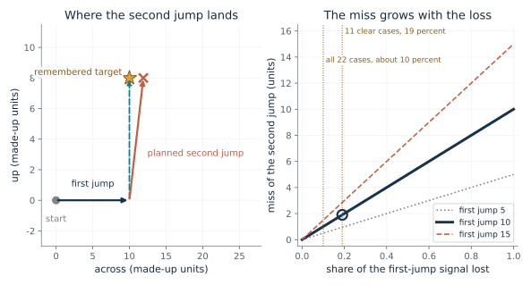
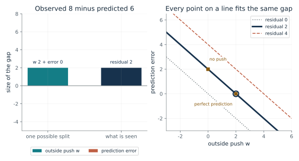
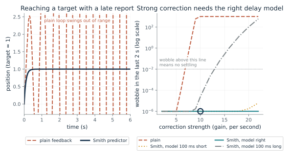
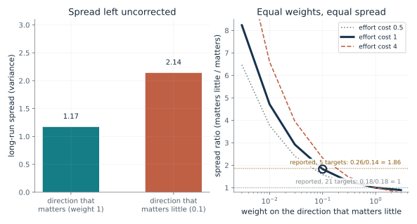
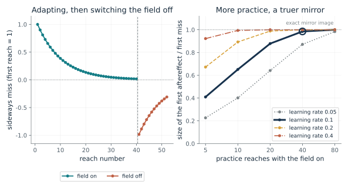
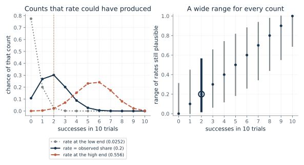

How does a mind aim the second jump before the first has been seen to land?
From Chapter 20, Where a prediction could come from: a relay and the cerebellum
If a second eye jump is planned as the remembered target minus the estimated first jump, how far does it miss when part of the first-jump signal is lost?
The eye starts at the origin and makes a first jump. The target for the second jump was seen before the move, so it is remembered relative to the start. The jump still needed is that target minus where the eye now is. If the estimate of the first jump is too small, the subtraction removes too little, and the planned jump is too large by the missing part.
Predict first: Before moving anything: if the eye jumped 10 units and the signal were totally lost, where would the second jump be aimed, and what is the miss?

Share of the first-jump signal lost: 0.19 · First jump (units across): 10
What happens: With the whole signal lost, the first-jump estimate is zero, so the plan is the full remembered target (10, 8) as if the eye had not moved. The end point lands 10 units too far across. The reported partial shortfalls, 10 and 19 percent, correspond to 1 and 1.9 of those units.
A first jump of 10 units with 0.19 of its signal lost makes the planned second jump (1.9, 8) instead of the needed (0, 8). The end point misses by 1.9 units, 0.19 of the 10-unit miss that total loss would cause.
- Planned second jump (across, up)
- (1.9, 8)
- Needed second jump (across, up)
- (0, 8)
- Miss of the end point (units)
- 1.9
- Share of the total-loss miss
- 0.19
A controller that plans one move from the last has to know how far the last move went. The subtraction makes the dependence visible, and the shift measures how much of the estimate is being used.
In two monkeys, a drug in a thalamic relay shifted second jumps, not single ones, in the direction that losing the signal predicts. The subtraction is the book's model of what the signal does, not a recorded calculation.
A saccade planner or robot arm can compute the subtraction exactly from its own motor command, a specification and not a model of a monkey.
Show the calculation
Estimate = (1 - 0.19) x 10 = 8.1. Plan = target - estimate = (10 - 8.1, 8 - 0) = (1.9, 8). Needed = (10 - 10, 8) = (0, 8). Miss = 0.19 x 10 = 1.9.
The equations and symbols
- m_2
- the planned second jump, a pair of numbers (across, up)
- r_2
- the remembered second target, measured from where the eye started
- s_1 and its estimate
- the first jump actually made, and the brain's estimate of it
- d
- the share of the first-jump signal lost, from 0 (none) to 1 (zero is substituted)
- miss
- how far the end point is from the target (the companion's step: with d lost, the plan overshoots by d times the first jump)
The target stays still and is remembered exactly. The first jump is estimated as a fixed share of itself. The relay in the study was partly inactivated, never shown to be off, and other pathways may carry the signal.
Check your understanding: The first jump is 15 units across and half the signal is lost. What is the planned second jump, and how far does it miss?
Book source: Chapter 20, Where a prediction could come from: a relay and the cerebellum. Illustration C20-D01. Formula. The subtraction m2 = r2 - s1-hat is the chapter's equation (notation added by the book). The target (10, 8), the jump sizes and the units are made up. The chapter reports the shortfall as a share: 19 percent in 11 clear cases and about 10 percent across all 22, which the authors measured as the observed shift divided by the largest shift a total loss would cause; here that share is the slider d.
If sensed feedback differs from the prediction, was it a push or a bad prediction?
From Chapter 20, Where a prediction could come from: a relay and the cerebellum
A body sends a command, predicts the feedback, and senses something else. How much of that gap is an outside disturbance?
The residual is a single number, but it is the sum of two unknowns, an outside push and a prediction error. Any pair adding to the residual fits. Even a residual of zero can hide a push exactly cancelled by an opposite prediction error.
Predict first: Observed 8, predicted 6. A friend says the residual of 2 proves something pushed the arm. Predict whether that is right before moving the sliders.

Outside push w: 2 · Residual (observed minus predicted): 2
What happens: With no push at all, the residual of 2 is entirely a prediction error: the model expected 6 and the movement's own effect was 8. The point sits at the top left of the line, and moving along the line changes the cause but not the residual.
Observed 8 against predicted 6 leaves a residual of 2. With an outside push of 2, the prediction must be off by 0. The same residual comes from an outside push with a perfect prediction, from no push with a prediction error, or any mix.
- Observed feedback
- 8
- Predicted feedback
- 6
- Residual (observed minus predicted)
- 2
- Prediction error left over
- 0
A controller that reacts to a residual has to know whether to correct the world or its own model. The residual by itself cannot tell, so extra information is needed.
The additive split is a constructed explanation, not a measured equation for a circuit; the chapter reports no brain test of it.
A robot comparing a command's predicted sensor value with the actual reading faces the same ambiguity. Logging a second sensor or a repeated trial is the extra information.
Show the calculation
e = 8 - 6 = 2. e = w + [rho(a) - f(c)], so 2 = 2 + 0.
The equations and symbols
- e
- the residual, sensed feedback minus predicted feedback
- f(c)
- the predicted feedback for a copy of the command c
- rho(a)
- the sensory effect of the movement a actually made
- w
- an outside disturbance added to the feedback
- rho(a) - f(c)
- the prediction error, how far the prediction missed the movement's own effect
Feedback is the movement's effect plus an additive outside push. Nothing else enters. The predicted feedback is fixed at 6.
Check your understanding: The observed feedback is 10 and the predicted is 6. If the outside push is 1, what is the prediction error?
Book source: Chapter 20, Where a prediction could come from: a relay and the cerebellum. Illustration C20-D02. Formula. The decomposition is the chapter's equation, called there a constructed explanation and not a measured equation for a brain circuit. The values observed 8 and predicted 6 (residual 2) are the chapter's example; the other residuals are chosen to show a zero and a larger gap.
Why does strong correction from late news make a controller swing?
From Chapter 20, Where a prediction could come from: a relay and the cerebellum
If the report on position arrives 0.2 s late, how strongly can a plain feedback loop correct before it swings, and what does a model of the delay change?
The plain loop pushes toward the target with a strength proportional to how far the delayed report says it is. While the report is old, the controller keeps pushing after the target is passed, and a strong push turns the overshoot into a growing swing. The Smith loop adds what the plant has moved since the report: x(t) minus x(t minus the modelled delay). If the model is right, the loop sees the present position.
Predict first: The plain loop stops settling above a gain of about 7.85 per second. Predict whether the delay-modelling loop will tolerate a gain of 10 when its delay model is exactly right.

Correction strength (gain per second): 10 · Error in the delay model (ms): 0
What happens: At gain 10 the plain loop swings out of range, while the loop that models the delay correctly rises to the target without overshoot. Now move the delay-model error to plus 100 ms and the gain to 20: the delay-modelling loop fails too.
At gain 10 per second with a 0.2 s delay, the plain loop does not settle and the Smith predictor with its delay model 0 ms off settles. The plain loop's limit for this plant is gain pi/(2 x 0.2) = 7.85.
- Plain loop
- does not settle
- Plain overshoot (percent)
- undefined (does not settle)
- Smith loop
- settles
- Smith overshoot (percent)
- 0
Strong correction from old data is the cause of the swing. A controller that holds a prediction of the present can act on it and use the late report as a check, which is what the cerebellum proposal says might happen.
The 1993 paper proposed, with a simulation and no experiment, that the cerebellum holds a forward model and a delay model. A 2007 magnetic-pulse experiment fits a hand estimate 138 ms old, but nothing here tests a cerebellum.
A Smith predictor is an engineering controller for processes with long delays. It is a specification, not a model of any brain.
Show the calculation
Plant x' = u, report x(t - 0.2). Plain: u = gain x (1 - x(t - 0.2)), which settles only when gain x delay is below pi/2, so gain below 7.85. Smith with the right delay model: the loop sees x(t) itself, so x(t) = 1 - exp(-gain x t), settling for every gain. Euler steps of 0.005 s; a loop settles if the last 2 s stay within 0.01 of the target.
The equations and symbols
- x
- position of a simple plant whose speed equals the command
- g
- correction strength, the gain, per second
- delta
- the delay of the report, 0.2 s here
- Smith loop
- feedback = late report + x(t) - x(t - modelled delay); the plant model is taken as exact
A pure integrator plant, no noise, an exact plant model, and a delay model that is exactly right or off by 100 ms. The plain loop settles only when gain times delay is below pi/2. Real delays and plants differ.
Check your understanding: The report is 0.2 s late. What is the plain loop's largest gain that still settles?
Book source: Chapter 20, Where a prediction could come from: a relay and the cerebellum. Illustration C20-D03. Simulation. The shower story and the Smith predictor idea are the chapter's. The plant, the 0.2 s delay (the low end of the chapter's 200 to 250 ms upper estimate for sight-guided reaches), the gains and the simulation are constructed here and are not the 1993 paper's simulation. Euler steps of 5 ms.
Why does a skilled hand correct some errors and let others go?
From Chapter 20, Which errors to fix, and how a body model is repaired
If a controller pays for effort and for missing the task, how much does it correct a direction that hardly matters?
Each step, a push moves the state. The controller can undo a share K of the error at an effort cost. If the error does not affect the task, the weight q is small, K is small, and the error is allowed to drift to a larger long-run spread. With zero weight there is no correction and the spread grows without a long-run limit.
Predict first: If a direction carries no weight at all, how large is its long-run spread? And does giving it the same weight as the other direction equalize the two?

Weight on the direction that matters little: 0.1 · Effort cost r: 1.0
What happens: At weight 0.1 against 1, the spread in the direction that matters little is about 1.83 times the other, near the reported 1.86 for five targets. That is a coincidence of a tidy number, not a fit. Set the weight to 1 and the two spreads are equal, the analogue of the 21-target condition where every point on the path was a target.
A direction weighted 0.1 gets gain 0.27 and spread 2.14, against gain 0.618 and spread 1.17 for the direction that matters. The ratio is 1.83; at equal weights it is 1. The model is constructed, not fitted to the study.
- Gain, direction that matters
- 0.618
- Gain, direction that matters little
- 0.27
- Spread, direction that matters
- 1.17
- Spread ratio (matters little / matters)
- 1.83
Perfect correction everywhere is costly. A controller that corrects only what interferes with the task spends effort where it pays, so a looser hand between targets is a prediction, not a defect.
Todorov and Jordan present this as a theory with simulations and experiments. It names no circuit and does not explain how skill is acquired.
An optimal feedback controller is a specification: choose the cost, and the gain follows. A robot arm can be built to correct only what the task needs.
Show the calculation
P = (q + sqrt(q^2 + 4 q r))/2 and gain K = P/(P + r). For q = 1, r = 1: K = 0.618. For q = 0.1: K = 0.27. Spread = 1/(K(2 - K)) = 1.17 and 2.14.
The equations and symbols
- q
- weight on missing the task in one direction
- r
- cost of the correcting effort
- P
- the steady-state cost-to-go weight of the standard scalar solution
- K
- the share of the error corrected each step
- Var
- long-run variance, with a push of variance sigma^2 = 1 added each step
A one-number state, a push of fixed size each step, a quadratic cost and a controller that knows the state. Real reaches have many joints, delayed noisy senses and no single weight. In the study, the 21-target comparison no longer detected a significant difference.
Check your understanding: At effort cost 1 and weight 1, K = 0.618. What long-run variance does that give?
Book source: Chapter 20, Which errors to fix, and how a body model is repaired. Illustration C20-D04. Model. The principle (correct deviations only when they interfere with the task) and the spreads 0.14 and 0.26 square centimeters with five targets, and 0.18 and 0.18 with 21, are quoted from the chapter's account of Todorov and Jordan (2002). The scalar model, its weights and its noise are constructed here; nothing is fitted to the study, and the study's ratio of 1.86 is drawn only as a reference line.
Why do reaches bend the other way when a force is switched off?
From Chapter 20, Which errors to fix, and how a body model is repaired
If a controller builds a model of a push from its errors, how closely does the aftereffect mirror the first miss, and how does that depend on practice?
Each reach corrects the estimate by a share of the miss. With the field on, the miss shrinks as the estimate approaches the push. When the field is removed, the estimate is still near the old push, so the arm compensates for a push that is no longer there, and the miss has the opposite sign.
Predict first: After practice with a learning rate of 0.1, what is the first miss when the field is switched off, compared with the very first miss?

Learning rate: 0.1 · Practice reaches with the field on: 40
What happens: After 40 reaches at learning rate 0.1 the estimate has reached 98.5 percent of the push, so the first reach with the field off misses by almost exactly the size of the first miss, on the opposite side. With 5 reaches the mirror is only 41 percent.
With learning rate 0.1 and 40 practice reaches, the model's field estimate reaches 0.985 of the true field. The first reach after the field is removed misses by 0.985, on the opposite side from the first miss of 1. This is a constructed update rule, not the paper's model.
- First miss (field on)
- 1
- First reach after the field goes off
- -0.985
- Aftereffect as a share of the first miss
- 0.985
- Miss left on the last practice reach
- 0.0164
A controller that adapts has built a model, and a model keeps predicting a push that is gone. The aftereffect is therefore evidence of the model, read from behavior.
The authors read the aftereffect as a sign that the controller gradually built a model of the field. That is an inference from behavior, not a recorded model.
A robot arm can run the same error-driven update on a force estimate; the update rule is a specification.
Show the calculation
Estimate after n reaches = 1 - (1 - 0.1)^n. After 40: 1 - 0.9^40 = 0.985. Miss with the field on = 1 - estimate; first miss with it off = 0 - estimate = -0.985.
The equations and symbols
- B
- the strength of the push of the world, taken as 1
- b_n
- the controller's estimate of the push after n reaches
- eta
- learning rate, the share of the error corrected in the estimate each reach
- N
- the number of practice reaches with the field on
The miss is proportional to the gap between the true push and the estimate, the estimate is updated from the last miss only, and the field is one steady push. Real reaches have trial-to-trial noise and several forces.
Check your understanding: At learning rate 0.2 and 10 practice reaches, how close is the estimate to the push?
Book source: Chapter 20, Which errors to fix, and how a body model is repaired. Illustration C20-D05. Simulation. The sequence of events (early distortion, practice back to near free-space paths, aftereffects that were approximately mirror images) is the chapter's account of Shadmehr and Mussa-Ivaldi (1994), which it draws as a schematic. The update rule, the learning rates and the trial counts are constructed here; nothing is a measurement or the paper's model.
What can 2 successes in 10 trials tell us?
From Chapter 20, Which errors to fix, and how a body model is repaired
If a robot hand completed a task in 2 of 10 real trials, how well does that pin down its success rate, and what would 0 of 10 tell?
For each possible true rate, the chance of seeing a given count is a binomial probability. A rate is ruled out when it would make the count of 2 or fewer, or 2 or more, rare. The rates that survive form an interval. The exact interval is wide because ten trials contain little information.
Predict first: With 0 successes in 10 trials, predict whether a true success rate of 25 percent is ruled out.

Successes in 10 trials: 2
What happens: Two of ten gives a share of 0.2, but rates from about 0.025 to 0.556 remain plausible at 95 percent. Move to 0 of 10: the high end falls to about 0.31, so 25 percent is not ruled out, but 50 percent is.
2 successes in 10 trials is a share of 0.2, but rates from 0.0252 to 0.556 remain plausible at 95 percent. The range is 0.531 wide, so ten trials cannot separate nearby rates.
- Share of trials
- 0.2
- Low end of the 95 percent range
- 0.0252
- High end of the 95 percent range
- 0.556
- Width of the range
- 0.531
A system that is evaluated on a handful of real trials cannot be told apart from many nearby rates. The honest report is the count and its range, not the share alone.
The chapter's brain-side counts are also small: seven patients, eight men, two monkeys. The same caution applies to their shares.
A robot test on 10 trials is a measurement with this much uncertainty. The 2019 preprint's hand-tuned simulation settings are a separate matter.
Show the calculation
Exact (Clopper-Pearson) range: the lowest rate that gives 2 or more successes with chance at least 0.025 is 0.0252; the highest rate that gives 2 or fewer with chance at least 0.025 is 0.556.
The equations and symbols
- n
- number of trials, 10
- k
- number of successes
- p
- the underlying success rate, unknown
- range
- the rates not ruled out at 95 percent, found by exact search
The 10 trials are independent with one success rate each. The ranges describe those trials only; they do not say the trials were representative of other starts or sequences. The chapter's other numbers are likewise from small samples.
Check your understanding: For 0 successes in 10, the high end of the range is 1 - 0.025^(1/10). What is it?
Book source: Chapter 20, Which errors to fix, and how a body model is repaired. Illustration C20-D06. Reported result. The counts come from the chapter's account of the 2019 Rubik's cube preprint: in 10 real trials starting with a solved cube and one fixed scrambling sequence, the hand completed it in 2 of 10 with a cube carrying its own sensors and in 0 of 10 when the cube's state was estimated from cameras. The preprint's own tests are not reproduced; the exact ranges are computed here from those counts.
Mathematical illustrations use the book's formulas with disclosed small examples. Each interactive choice shows a result computed from the same calculations as the chapter notebook. A simulation is not a measurement, and for a brain the mathematics is a model: a picture illustrates a result, and the assumptions determine its scope. Review copy, brain-computer partnership revision of 1 november 2026.